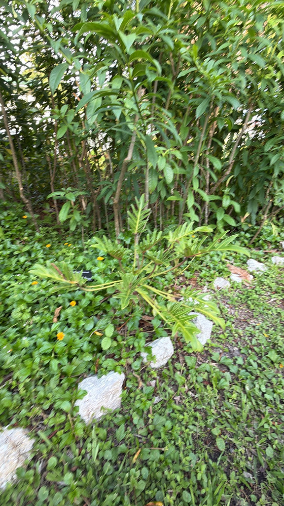

- Recently reclassified from Philodendron into its own genus, the Xanadu is still adjusting to its new scientific identity.
- The deeply lobed leaves are engineered to let wind pass through without toppling the plant — an adaptation from its native Mato Grosso forests of Brazil, where afternoon storms are severe.
- It spreads slowly by underground rhizomes into dense, sculptural clumps that need no maintenance once established.
- Mildly toxic if ingested, which keeps browsers away.
Native to southern Brazil — specifically Santa Catarina state. Despite being one of the most widely sold landscape plants in Florida, its wild origin was unknown for years until a wild population was discovered in Brazil in 2001. Reclassified from Philodendron to Thaumatophyllum in 2018 based on molecular studies, though most nurseries still sell it under the old name.
- The name Thaumatophyllum means "wonder leaf" in Greek — an appropriate name for one of the most distinctive leaf forms in the plant world. The reclassification from Philodendron to Thaumatophyllum in 2018 upset decades of nomenclature, and most of the horticultural world has yet to catch up.
- The name Xanadu comes from the Samuel Taylor Coleridge poem "Kubla Khan" — used by the original plant patent holder to evoke the exotic and the lush.
Limited wildlife value. It is grown for its deeply lobed foliage and rarely flowers in cultivation, so it offers little nectar or fruit; the dense, low clump gives some ground-level cover for small animals.
spathe and spadix inflorescence typical of the Araceae family — rarely produced in cultivation. Propagation by division of basal offshoots. The plant slowly spreads at the base, producing new growth points that can be separated. The deeply lobed leaves are the signature feature — each leaf has up to 15 lobes radiating from the central stem.
Do not eat any part of this plant. Like other aroids it contains calcium oxalate crystals that cause immediate, intense burning of the lips, mouth, tongue, and throat, and can cause swelling.
Keep it away from children.
It's toxic to dogs and cats the same way (ASPCA) — oral burning, drooling, and vomiting if the leaves are chewed. Keep pets from chewing it.
NOMENCLATURE: Widely sold as 'Philodendron xanadu,' the accepted name has been reclassified to Thaumatophyllum xanadu (Sakuragui, Calazans & Mayo, 2018), moving it out of Philodendron into the segregate genus Thaumatophyllum within the arum family (Araceae).
Kew's Plants of the World Online still lists Philodendron xanadu as the accepted name with Thaumatophyllum as a synonym, so both names remain in current use. Family placement (Araceae) is not in dispute. Signage uses Thaumatophyllum xanadu.


- © Greg Bratlee (CC-BY-NC), via iNaturalist
- © Randall Carter (CC-BY-NC), via iNaturalist